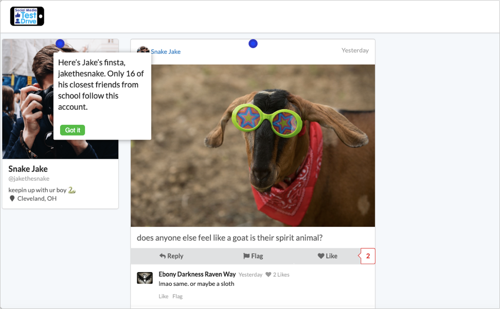

Practice digital literacy skills in a social media simulation
Social Media TestDrive prepares young people for the online world through experiential learning in a simulated social media environment.
Education for the digital age
Social Media TestDrive simulates realistic digital dilemmas and scenarios that young people may encounter as they enter the social media world.
Each module teaches essential digital citizenship concepts, covering topics such as privacy, online identities, cyberbullying, and more.
